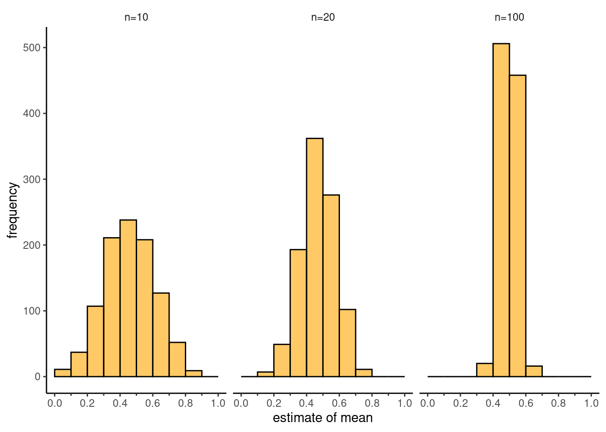
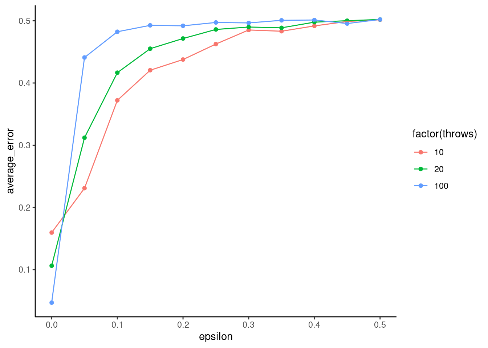

X <- .5
theta <- .5
mean(replicate(10000, {
ifelse(rbinom(1,1, theta),sum(rbinom(2,1, theta)),0) - X
}))[1] 0.0054At a fairground a man advertises a gambling game that allows participants the chance to win a money prize if they pay an entrance fee. The game sequence goes like this:
Calculate the expected value of your winnings W if you participate, and hence determine the fair price of the game.
$$ [W] = 0 + (2 + 1 {2}) - X \
[W] = £0 X = £0.5 $$
Create an R function that simulates a single run of the game, and use this to estimate the expected value of your winnings.
X <- .5
theta <- .5
mean(replicate(10000, {
ifelse(rbinom(1,1, theta),sum(rbinom(2,1, theta)),0) - X
}))[1] 0.0054Problem 12.1.3 Suppose that you pay \(£1\) for each game, and start with \(£10\) in your pocket. By using your previously created function, or otherwise, determine the expected number of games you can play before going broke.
X <- 1
Y <- 10
game <- function(X, Y) {
iter <- 0
while (Y >= X) {
iter <- iter + 1
Y <- Y + ifelse(rbinom(1,1, theta),sum(rbinom(2,1, theta)),0) - X
}
iter
}
round(mean(replicate(1000, {
game(X, Y)
})), 0)[1] 20Suppose you start with \(£10\), and play the game \(100\) times (stopping only if your wealth is below the price of entry), each time paying \(£0.49\). You want to insure against the risk of losing all your wealth. What is the fair price to pay for such an insurance scheme?
X <- .49
Y <- 10
times <- 100
game <- function(X, Y, times) {
iter <- 0
while (Y >= X & iter < times) {
iter <- iter + 1
Y <- Y + ifelse(rbinom(1,1, theta),sum(rbinom(2,1, theta)),0) - X
}
Y
}
Y*mean(replicate(1000, {
game(X, Y, times)
}) < X) [1] 1.2An analysis results in a posterior with the following probability density function:
\[ f(x) = \begin{cases} \frac{1}{1.33485} \frac{e^{-x^2/2}}{\sqrt{2\pi}}, & \text{if } x < 0.9735, \\ 0.186056, & \text{if } 0.9735 \leq x \leq 5, \\ 0, & \text{otherwise.} \end{cases} \]
Verify that this is a valid PDF. (Hint: see R’s numerical integration function.)
fPDF <- function(X){
y <- ifelse(X < 0.9735, (1 / 1.33485) * (1 / sqrt(2 * pi)) * exp(-X ^ 2 / 2),
ifelse(X <= 5, 0.186056, 0))
return(y)
}
integrate(fPDF,0,8)1.000005 with absolute error < 0.00012Using independent sampling, estimate the mean and variance of this distribution.
fReject <- function(N){
count <- 1
lSamples <- vector(length=N)
while(count <= N){
X <- runif(1, 0, 5)
Y <- runif(1, 0, (1 / 1.335) * (1 / sqrt(2 * pi)))
if(Y < fPDF(X)){
lSamples[count] <- X
count <- count + 1
}
}
return(lSamples)
}
mean(fReject(10000), 100)[1] 2.328909var(fReject(10000))[1] 2.259186fIntegrator <- function(X){
return(integrate(fPDF, 0, X)[[1]])
}
lCDF <- sapply(seq(0, 5, 0.1), fIntegrator)
fICDF <- approxfun(lCDF, seq(0, 5, 0.1))
fInverseTransform <- function(N){
lCDF <- runif(N, 0, 1)
return(sapply(lCDF, fICDF))
}
mean(fInverseTransform(100000))[1] 2.353278var(fInverseTransform(100000))[1] 2.245717Construct uncertainty intervals around your estimates of the mean.
quantile(replicate(1000, {
mean(fInverseTransform(1000))
}), c(.1,.9)) 10% 90%
2.286397 2.409232 Verify your previous answer by calculating the mean and variance of this distribution.
(aMean <- integrate(function(x) x * fPDF(x), 0, 5)[[1]])[1] 2.35033(aVar <- integrate(function(x) x ^ 2 * fPDF(x), 0, 5)[[1]] - aMean ^ 2)[1] 2.240772Using the above method, where \(g\) is the continuous uniform distribution between \(0\) and \(5\), find an estimate of the mean.
fImportance <- function(N){
lX <- runif(N, 0, 5)
lF <- sapply(lX, fPDF)
lG <- rep(1 / 5, N)
lRatio <- lX * lF / lG
mean(lRatio)
}
fImportance(10000)[1] 2.347735\[ \int_{-\infty}^{\infty} \frac{x^6}{\sqrt{2\pi}} \exp\left( -\frac{x^2}{2} \right) \, dx \] ::: {style=“color:blue”} TODO ::: ## Problem 12.4 Markovian coin Consider a type of coin for which the result of the next throw (heads or tails) can depend on the result of the current throw. In particular, if a heads is thrown then the probability of obtaining a heads on the next throw is \(\frac{1}{2} + \epsilon\) ; if instead a tails is thrown then the probability of obtaining a tails on the next throw is \(\frac{1}{2} + \epsilon\) . To start, we assume \(0 ≤ \epsilon ≤ \frac{1}{2}\) . The random variable \(X\) takes the value \(0\) if the coin lands tails up or \(1\) if it lands heads up on a given throw.
Computationally estimate the mean of the coin by simulating 10, 20 and 100 throws for \(\epsilon = 0\).
epsilon = 0
theta = .5 + epsilon
simulate <- function(throws, theta, epsilon) {
heads <- 0
for (throw in 1:throws) {
head <- rbinom(1,1,theta)
heads <- heads + head
theta <- theta + ifelse(head,epsilon,-epsilon)
if (theta < 0) {
theta <- 0
} else if (theta > 1) {
theta <- 1
}
}
heads
}
data.frame(throws=c(10, 20, 100)) |>
rowwise() |>
mutate(heads = list(replicate(1000, simulate(throws, theta, epsilon)))) |>
unnest(heads) |>
mutate(mean = heads / throws) |>
ggplot() +
geom_histogram(aes(x=mean),binwidth = .1, boundary = 0, fill = "orange", alpha=.6, color="black") +
facet_wrap(vars(throws), labeller = labeller(throws = function(value) {
return(paste0("n=", value))
})) +
theme_classic() +
scale_x_continuous(breaks = seq(0,1,.2), limits = c(0,1), minor_breaks = seq(0,1,.1)) +
guides(x = guide_axis(minor.ticks = TRUE)) +
theme(
strip.background = element_blank()
) +
labs(
x="estimate of mean",
y="frequency"
)
As \(\epsilon\) increases, how does the error in estimating the mean change, and why?
expand.grid(throws=c(10, 20, 100), epsilon=seq(0,.5,.05)) |>
rowwise() |>
mutate(heads = list(replicate(100, simulate(throws, theta, epsilon)))) |>
unnest(heads) |>
mutate(mean = heads / throws) |>
group_by(throws, epsilon) |>
summarize(average_error = sd(mean), .groups = "drop") |>
#mutate(average_error = average_error/sqrt(throws)) |>
ggplot(aes(x=epsilon, y=average_error, color=factor(throws))) +
geom_point() +
geom_line() +
theme_classic()